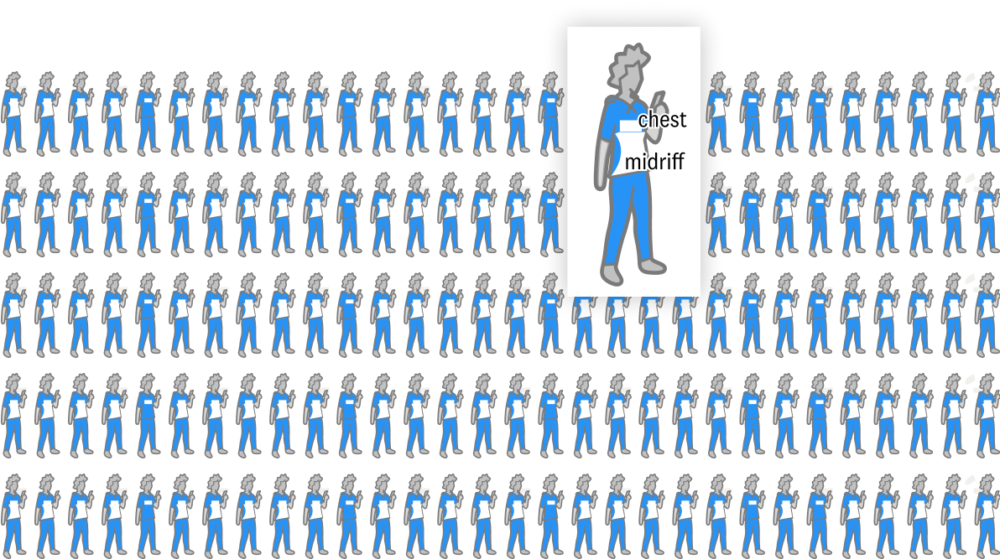
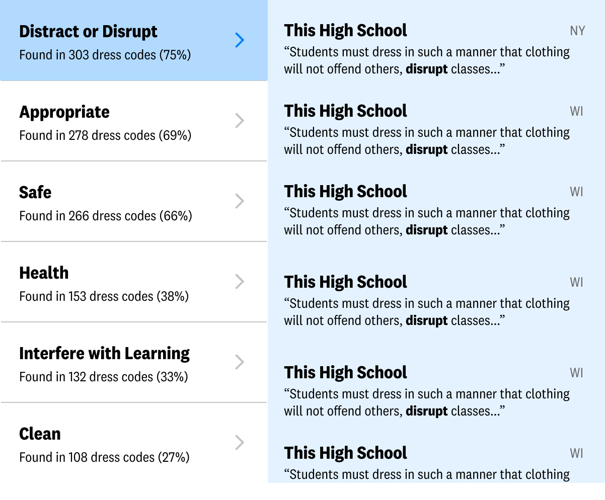

This Shirt is Too Sexy for You
From rules restricting strap width to skirt length, girls’ bodies are disproportionately targeted for sexually suggestiveness under the guise of distraction or appropriateness.
December 2018
In early 2017, writer Dana Schwartz posed a question to the Twitter-verse: "Ladies, when was the first time you were made to feel embarrassed and sexualized for what you wore?"
I thought of my earliest memories of this type of behavior -- the times when I wasn’t aiming to be “sexy”, but was perceived that way anyway. I remembered the girls stopped outside of our middle school dance because their shoulders and underarms were bare. Holding my arms by my sides while an administrator checked the length of my shorts. Being handed a detention slip because a small sliver of the skin on my torso was exposed. Each of these took place in school as adults tried to enforce the school dress code.
The thing is, dress codes are tricky. These rules were written, seemingly, in an attempt to cover up our bodies and prevent them from being sexualized. But their enforcement does just the opposite, turning people into a collection of inappropriate body parts to be covered. These types of policies are in the news constantly as students push back against the antiquated rules. But even with a never-ending list of examples, and research conducted on public schools in California and Washington DC, these issues are still often presented to the public as a series of isolated incidents. I wanted to better understand just how pervasive the sexualization of students is in dress codes, so we analyzed 356 public high school dress codes across the US for the 2018-2019 school year.
Body Parts to Hide
Well, if we’re trying to figure out how dress codes turn entire people into body parts, let’s start there: the body parts that are banned. I’m not being dramatic here, nearly 80% of the schools that we sampled specifically prohibited certain body parts from being visible.
Each of the figures below represents one school dress code. Any banned body parts have been removed from the figure.
But like the stories of dress code infractions that pop up across the country, we find more information about the trends in dress codes in the aggregate. Midriffs -- the front part of your body between your chest and your waist -- is the most banned body part by a long shot. Which raises the question: why?
In Western culture, the midriff, and navel in particular, has a long history of being seen as taboo or indecent. That is, the female midriff. In New York City, the female navel (i.e., belly button) was forbidden from being seen in public spaces until 1985. Arguments go on about whether baring the female midriff is fashionable, erotic, or attractive to those looking at her, but often don’t include the views of the people exposing their tummies.
Placing so much emphasis on the regulation of girl’s bodies removed from all other context, insinuates to the student that her appearance is more important to others than her other characteristics. This focus also sends the message that she should be constantly concerned with the way that others perceive her as well, a thought process referred to by the American Psychological Association as “self-objectification”. Studies have shown that when people of any age are consciously thinking about their appearance, they perform worse on various cognitive tasks like math tests and are more likely to experience eating disorders, low self-esteem, and depression.
In schools, this focus on covering up the body of girls, disproportionately impacts girls of color. Black girls, in particular, are stereotypically perceived as “hypersexualized”, “provocative”, and “not ladylike”. As such, they are found in violation of their school’s dress codes more often than their white classmates, even when both were breaking the rules.
Clothes We Wear
We can’t talk about dress codes without also talking about clothes. Through our analysis, we found 48 items or styles that were banned for students at least 4% of the time. Although the rules are generally written to affect all students evenly, many of them affect some students more than others. For instance, although male students are also not allowed to wear halter tops, that fashion item is typically made and marketed to girls.
Let’s see what it looks like when we split out these items into those that reveal the aforementioned banned body parts and those that don’t. We’ll split it a little further to see which of these items and styles are marketed to boys, girls, or both.
More items are banned for girls overall, but within those items, all but one of them are meant to hide or obscure the body in some way.
Beyond the items that are prohibited, the subjective nature with which the dress code is enforced for these items is troublesome for many students. X% of dress codes that we analyzed included some clause that a school employee would make the final decision on whether or not an item is inappropriate. Some policies even explained a particular rule and immediately back-pedaled, saying that “...on some students, this may still be considered an unacceptable length”. In an interview, one teacher noted that “Dresses are a little touch and go because of girls’ shapes. Typically if you are much smaller, it doesn’t look as risqué.” And of course, students have taken notice, drawing attention to subjective policies that unfairly impact “curvier” students.
The Words We Tell Our Students
Even after dress codes ban body parts and clothes that expose the body, making it clear that some parts of you should be hidden, the words we use further reinforce this idea. Most dress codes begin with a few sentences informing the reader what a dress code is for and why it exists. You’ll often find phrases like the following:
“The district’s dress code is established to teach grooming and hygiene, prevent disruption, and minimize safety hazards.”
Rusk High School (TX)
“The purpose of the Dress Code is to encourage students to focus on the learning process without the distractions of unsuitable dress and grooming.”
Lehigh Senior High School (FL)
“Students are encouraged to ask themselves the following questions when choosing what to wear to school:
Does my outfit promote modesty and respectability?
Does my choice of clothing make those around me uncomfortable?
Does my clothing expose too much?”
Wausaukee High (WI)
“Bizarre, immodest or revealing clothing demeans the value of the wearer and disrupts the educational atmosphere. It will not be permitted.”
Illinois Valley High School (OR)
Our words matter. Whether intentionally or not, these dress codes are telling students that their bodies and modes of dress are distractions or linked to their value or self worth. And as we’ve already seen, it is largely the female students that are receiving these messages.
We extracted the most common words used to describe students, their bodies, or their mode of dress in the dress code. Explore some examples of the most common words and phrases below.
Methods
All school handbooks were chosen for analysis opportunistically as follows: I found a list of thousands of potential public high schools using the National Center for Education Statistic’s (NCES) search function for public schools. I limited the resulting schools to just those that had a web address listed and then accessed the homepage web content from each site searching for words like “handbook”, “dress code”, and “code of conduct”, filtering my list of schools to just those that contain one of the above phrases. Then, I manually visited the resulting (2000+) websites in an attempt to find the dress code. Dress codes were disqualified from analysis if they: had a uniform policy, were not from the 2018-2019 school year, or represented schools that “magnet” or “boarding” schools (according to the NCES).
Once the list of dress codes was compiled, I and two data assistants (Kaitlyn Thomas and Anna Houston) manually recorded every rule listed in each dress code, the words used in the dress code’s rationale, as well as any listed sanctions for breaking the dress code.
Looking for More?
In the larger conversation around school dress codes, the sexualization of students is simply one part. Luckily, some amazing work has been done focusing on this and other areas as well:
Dress Coded: Black girls, bodies, and bias in D.C. schools
National Women’s Law Center and DC Students • 2018
Combining data from all but 3 of Washington DC’s public high school’s written dress code policies alongside the lived experiences of 21 black girls that attend/have recently attended those schools, this report explores the effect of dress code policies on black girls. The authors of this report also discuss the impact of uniform policies on families and suggestions for how educators and policymakers can improve dress codes.
How dress codes criminalize males and sexualize females of color
Alyssa Pavlakis and Rachel Roegman • 2018
Pavlakis and Roegman surveyed an entire school’s student population (with a total of 384 responses) and 13 teachers to learn about how often students followed the dress code, were disciplined for breaking the policies, and their feelings about the dress code overall. They explore gender, race, and the intersection of the two.
Undressing the Dress Codes: An analysis of gender in high school dress code policies
Jaymie Arns • 2017
Through their Master’s Thesis, Arns dissects the dress codes in 56 public high schools in California (2016-2017 School Year) and how students at the intersections of gender and race are disproportionately targeted.
“Tuck in that Shirt!” Race, class, gender, and discipline in an urban school
Edward Morris • 2005
Over the course of 2 school years, Morris observed and recorded the race, class, and gender influence on school disciplining of students’ bodies and dress in a Texas middle school.
Oregon NOW • 2016
The Oregon National Organization for Women (NOW) created a model student dress code “intended to address recent and escalating controversy and conversation both in Oregon and across the nation about overreaching and detrimental dress codes for some K-12 school students.